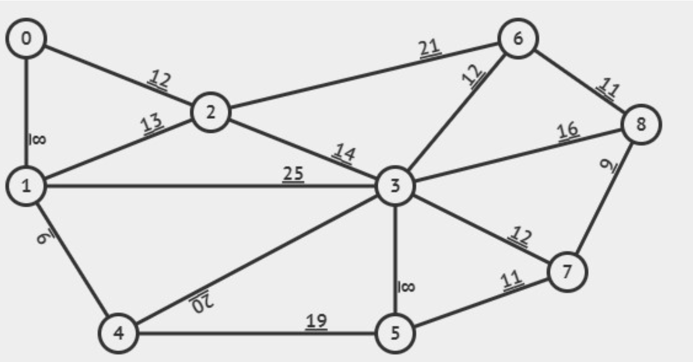
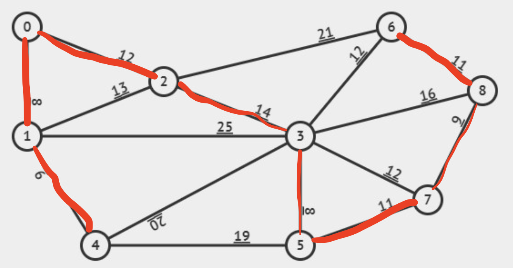

Algorithms and Data Structures
Scroll down or hover over the course to see what topics you can read about
Searching
BFS (Breadth-first Search)
BFS, also called Breadth-first search, finds the shortest path to target in an unweighted graph. It searches in all direction regardless of cost or proximity to the target. It uses a priority queue (FIFO).
Dijkstras algorithm
The A* algorithm
Trees and Heaps
Min Heap
The minimum heap is a binary tree just like max heap which are
used to implement priority queues. The min heap stores the
lowest value at its root, and the children of each node are
greater than or equal to the parent. The priority can
mathematically be expressed as such:
heap[i] ≤ heap[i*2+1] and heap[i] ≤ heap[i*2+2].
The tree is filled on all levels except the last level, which
is filled from left to right.
Operations usually used
for a min heap include:
- Insertion: add a new element at the end of the tree and use 'sift up' to restore heap priority
- Deletion (of min element): deleting the root, replace it with the last element in the heap and use 'sift down' to restore heap priority
- findMin: the minimum element is always the root
Binary seach trees
A Binary seach tree is a datastructure with specific charactaristica that makes it effective with search, insert and delete operations. These are some of the principles:
-
Value of the node
- Every node has a value
-
Left subtree
- Every node in the left subtree of the node has a lesser value
-
Right substree
- Every node in the right subtree of the node has a greater value
-
Recursive attributes
- Every subtree is also a binary search tree
Below, you see some binary search trees:
8 30 20
/ \ / \ / \
3 10 13 45 12 23
/ \ \ / \ / \ / \
1 6 14 3 23 32 87 4 14
/ \ / \ / / / \ /
4 7 13 5 16 31 46 99 2
These all fulfill the previous statemens about the left and right subtree, also the value of the nodes, and the recursive subtrees. Insertion, deleting and searching all takes an average of O(log n), but in a worst case, it will take O(n) if the BST (Binary search tree) is unbalanced. To improve this, AVL-trees can be used, as they are balanced trees. Shown above are two balanced trees and one unbalanced. The balanced tree is defined by the height of the two child subtrees differ by no more than one. As you can see, the last BST is unbalanced because of this.
AVL Trees
AVL trees are balanced BST's. AVL tolerate difference in height of at most one between left and right subtrees of any node This means that insertion and deletion can cause a violation in the balance of the tree, given that after one of these operations, a left and a right subtree can have a depth difference of more than one. If this occurs, you'll have to rebalance the tree. There are rotations for simple violations, and double rotations for more complicated violations. There are two kinds of double rotations. The left-right rotation, and the right-left rotation. This is simply the order of both rotations, either left or right rotations first, followed by the opposite rotations.
Study this LR (left-right rotation)
z z x
/ \ / \ / \
y T4 x T4 y z
/ \ / \ / \ / \
T1 x y T3 T1 T2 T3 T4
/ \ / \
T2 T3 T1 T2
Notice that the subtree x causes a depth difference bigger than one at the y and T4 level. It is on the left subtree from the root, and on the right subtree of its parent. Would it have been on the right subtree of the root, and then on the left subtree of its parent, you would've needed a RL rotation (right-left).
Max Heap
The max heap is the opposite of min heap, which means that the
root of the tree is now the maximum element. And the children
are now less than or equal to the root. In min heap, the
children are greater than or equal to their parent node. This
can also be expressed mathematically like so:
heap[i] ≥ heap[i*2+1] and heap[i] ≥ heap[i*2+2].
The tree is also filled on all levels except for the last which is filled from left to right. As with min heap, usual operations are:
- Instertion: add new element to the end of the heap and use 'sift up' to restore heap priority
- Deletion (of max element): Remove the root element, replace with the last element and use 'sift down' to restore heap priority
- Find max: the maximum element is always at the root
Traversing
There are four different kind of traversing. Inorder, Preorder, Postorder, and Level-order. These have been present in previous Exam tests. Let's run through them all quickly!
- Inorder Traversing
- Order: Left subtree, Root, Right subtree
- Usage: Retrieve nodes in a non-decreasing order in a BST
- Preorder Traversing
- Order: Root, Left subtree, Right subtree
- Usage: Make copy of the tree or to evaluate expressions in expression trees
- Postorder traversing
- Order: Left subtree, Right subtree, Root
- Usage: To delete or free nodes in the tree and to evaluate expressions in expression trees.
- Level-order Traversing
- Order: Visits nodes level-by-level from top to bottom and from left to right in each level
- Usage: In breadth-first search (BFS) and is useful for finding the shortest path in unweighted trees.
consider the following BST
1
/ \
2 3
/ \ / \
4 5 6 7
Using the different traversal methods the nodes are visited in the following orders:
- Inorder traversal: [4, 2, 5, 1, 6, 3, 7]
- Preorder traversal: [1, 2, 4, 5, 3, 6, 7]
- Postorder traversal: [4, 5, 2, 6, 7, 3, 1]
- Level-order traversal: [1, 2, 3, 4, 5, 6, 7]
These traversal methods serve different purposes and are suitable for various tasks related to tree structures.
Hashing
There are different types if hashing, that if a spot is
occupied, has different logic of how to find an unoccupied
spot. Usually, hashtables has sizes of prime numbers, since
you use the modulus operator (%) and if you have a number that
is not a prime number, more numbers would fit the equation
num % size == 0.
The general idea of hashing is storing an element in an array
with a key. The key is used to then retrieve
the element when you need it. Generally you go from index 0 to
tableSize - 1, so from the first element to the last.
For a more thorough explenation, see Chapter 5 in Data
Structures and Algorithm Analysis in C++.
If you use integers as the key, a simple way to hash the
element would be key % tableSize. This is the reason
to use primes, to not store 10 and 20 together as an example.
Different kinds of probing include:
-
Linear probing
- If the index already is occupied, find the next unoccupied index to store the key. (increment by 1 until an empty space is found)
-
Quadratic probing
- If a collision appears, you start with i = 1 and go up until you find an empty space with the formula i2
- 12, 22, 32...
-
Double hashing
- This is the use of another hash function, so you have two hash functions
- If hash(x) results in a collision, then you use i*hash2(x)
-
Random probing
- Uses a random number generator initialized with the key.
-
Secondary clustering
- Is an issue with quadradic probing where two different values, follow the same probing sequence
- The last two aren't covered in the book
There are different types of hashing
Big O notation
Big O notation has two parts. Time complexity and the space complexity.
Time complexity
Time complexity represent how much time the code uses
to execute. An example would be a for loop that loop through the
length of an object. This would have the time complexity of
O(n), where n represents the length of the object. A nested for
loop that does this two times, then have a time complexity of
O(n2). There are different time complexities and to
summarise, we have
O(1), O(n), O(log(n)), O(nlog(n)), O(nx),
O(xn)
and O(n!).
What exactly is Big O notation?
Big O Notation is a mathematical notation used to describe
the upper bound of an algorithm’s time complexity in terms of
how it grows relative to the size of the input.
A table summing up these notations can be seen
below
| Big O Notation classes | f(n) | Number of operations, n = 10 | Execution time (1 instruction/μsec) |
|---|---|---|---|
| Constant | O(1) | 1 | 1 μsec |
| Logarithmic | O(log(n)) | 3.32 | 3 μsec |
| Linear | O(n) | 10 | 10 μsec |
| O(nlog(n)) | O(nlog(n)) | 33.2 | 33 μsec |
| Quadratic | O(n2) | 102 | 100 μsec |
| Cubic | O(n3) | 103 | 1 msec |
| Exponential | O(2n) | 1024 | 10 msec |
| Factorial | O(n!) | 10! | 3.6288 sec |
As we can see, the most optimal is O(1) since it is the fastest. And since we can have these time complexities, some algorithms are better than others
Space complexity
Space complexity is the amount of space a function or a program takes up. It has the same notation of O(n), O(1) and so on. How much space it takes up with a given input is preferably O(1) but many times this is not the case. A visualization of how much space and time it takes can be seen on the figure below.

Recursion
Recursion is basically a for loop, but it makes code look cleaner and easier to read. It is a function that calls itself. An example can be seen below.
int sumDivisableBy3(int N) {
int sum = 0;
if (N <= 0) {
return 0;
} else if (N % 3 == 0) {
sum += N;
cout << "added " << N << " to sum" << endl;
N = N - 2; # subtract 2 and then subtract 1 more
# when you got out of the if statement
}
sum += sumDivisableBy3(N - 1);
return sum;
}
As you can see, this function calls itself. It also has a default case where if N ≤ 0 it returns 0. This is where the function stops and it has the time complexity of O(N).
Another simple recursive function is the fibbonacci function which can be seen below:
unsigned int fib(int n) {
if(n==0 || n==1) {
return n;
}
else {
return fib(n-1) + fib(n-2);
}
}
This function however isn't optimal since it has a time copmlexity of O(2n). Sometimes the fibonacci function is called with a value that has already been acall before.
Stacks, queues and heaps
Priority Queues
Sorting
Exam questions
BST
An exam question for BST: Et (balanceret) binært søgetræ (binary search tree) kan implementeres som et simpelt array af heltal, hvor det første element (index 0) er ubrugt af hensyn til adressering. -1 angiver at elementet ikke findes/er tomt.
- Beskriv hvorledes dette kan gøres effektivt (således at et givet element kan findes i O(log(N) forudsat det binære søgetræ er balanceret), hvor N er antallet af elementer i træet.
To answer this question, we need to have a BST represented in an array of integers. The root node is at index 1, and the left child is at [2*i], and the right child is as [2*i+1]. If a position is -1, there is no node at this position. We will use AVL tree given that it need to be balanced. To effectively search, we will start at the root 1 and do a binary search from here.
- If the current element is -1, the element does not exist in the tree.
- If the current element matches the target, the element is found
- If the target is less than the current element, move to the left child (2*i)
- If the target is greater than the current element, move to the right child (2*i+1)
Lets try with this array:
| Index | 0 | 1 | 2 | 3 | 4 | 5 | 6 | 7 | 8 | 9 | 10 | 11 | 12 | 13 | 14 | 15 | 16 | 17 | 18 | 19 |
| Tree | -1 | 20 | 10 | 30 | 5 | 15 | 25 | 35 | 2 | 7 | 13 | 18 | 21 | 29 | -1 | -1 | -1 | -1 | -1 | -1 |
Lets search for the element 13. We start by the root at index 1. 13 < 20 so we go to index 2*1 where 10 is located. 13 > 10 so now we go to index 2*2+1 where 15 is located. 13 < 15 so now we go to index 2*5, where 13 is located. 13 == 13 and therefore we have now found the target.
Kan det nedenstående array repræsentere et binært søgetræ? Begrund dit svar
| Index | 0 | 1 | 2 | 3 | 4 | 5 | 6 | 7 | 8 | 9 | 10 | 11 | 12 | 13 | 14 | 15 |
| Tree | -1 | 27 | 21 | 50 | 17 | 23 | 48 | -1 | 80 | 19 | -1 | -1 | 49 | 46 | 75 | 90 |
Here we need to check, if both it is balanced, and if the child and are in the right subtrees. Let's present it visually
27
/ \
21 50
/ \ /
17 23 48
/ \ / \ / \
80 19 49 46 75 90
Here we can see pretty quickly that it cannot be used as a binary search tree since the subtrees don't fit the rules, since 80 is in the left subtree event though it is bigger than 27.
Now for the next question: Hvis arrayet ikke kan
repræsentere et binært søgetræ, så modificer det så det kan
og argumenter for hvorfor det er tilfældet, samt tegn det
binære søgetræ det repræsenterer.
We now need to update
it so it can represent a BST which means, we'd like for it
to look like this:
27
/ \
21 50
/ \ / \
17 23 48 80
\ / \ / \
19 46 49 75 90
For this tree to be represented in an array, it would look like the table below
| Index | 0 | 1 | 2 | 3 | 4 | 5 | 6 | 7 | 8 | 9 | 10 | 11 | 12 | 13 | 14 | 15 |
| Tree | -1 | 27 | 21 | 50 | 17 | 23 | 48 | 80 | -1 | 19 | -1 | -1 | 46 | 49 | 75 | 90 |
Now this can be used as a BST, because all the left subtrees have values that are less than its parent node, and the right subtrees all have values that are greater than its parent node. Specifically this can be used as an AVL tree, since the difference in height is no greater than one at any given time. 80 has been moved to be on the right subtree of 50, making at possible to use this as a BST.
The last question for this particular problem is: Hvilken træ gennemløbs algoritme kan bruges for at komme fra det binære træ til array implementeringen (dvs besøger knuderne i samme rækkefølge som de findes i arrayet)? Hvad er tidskompleksiteten af dette gennemløb?
The Order of traverse you would use to represent this tree in the given array (The altered on), would be Level-order Traversing. This is becuase you go level by level, from left to right, and write down each element you meet. The first level only has 27. The second level has 21 and 50, third has 17, 23, 48, and 80 and so on. The time copmlexity for this would be O(N) where N is the number of elements is the tree. This is because you need to look at each element to write an array of the tree.
Max Heap
Skriv en klasse MaxHeap der kan indeholde ints ved brug af standardklassen vector fra C++ biblioteket MaxHeap’en skal have følgende operationer:
bool isEmpty() const; //is the heap empty?
int size(); //number of elements in the heap
void insert(const int x); //add an element to the heap const
int findMax() const; // find the maximum element of the heap
int deleteMax(); //delete and return the maximum element of the heap
A class that implements this can be seen below:
#include <stdexcept>
#include <vector>
class MaxHeap {
private:
std::vector<int> heap;
void siftup(int index) {
while (index > 0 && heap[index] > heap[parent(index)]) {
std::swap(heap[index], heap[parent(index)]);
index = parent(index);
}
}
void siftdown(int index) {
int maxIndex = index;
int l = left(index);
if (l < heap.size() && heap[l] > heap[maxIndex]) {
maxIndex = l;
}
int r = right(index);
if (r < heap.size() && heap[r] > heap[maxIndex]) {
maxIndex = r;
}
if (index != maxIndex) {
std::swap(heap[index], heap[maxIndex]);
siftdown(maxIndex);
}
}
// helper functions
// for 0 indexing
int parent(int i) { return (i - 1) / 2; }
int left(int i) { return i * 2 + 1; }
int right(int i) { return i * 2 + 2; }
public:
bool isEmpty() const { return heap.empty(); } // is the heap empty?
int size() { return heap.size(); } // number of elements in the heap
void insert(const int x) {
heap.push_back(x);
siftup(size() - 1);
} // add an element to the heap const
int findMax() const {
if (isEmpty()) {
throw std::runtime_error("Heap is empty");
}
return heap.front();
} // find the maximum element of the heap
int deleteMax() {
if (isEmpty()) {
throw std::runtime_error("Heap is empty");
}
int result = heap.front();
heap[0] = heap.back();
heap.pop_back();
if (!isEmpty()) {
siftdown(0);
}
return result;
} // delete and return the maximum element of the heap
};
Redegør for tidskompleksiteten af de fem operationer
The time copmlexity for each operation can be seen below:
| Function | isEmpty() | size() | insert() | findMax() | deleteMax() |
| Time complexity | O(1) | O(1) | O(log n) | O(1) | O(log n) |
The oprations with the time complexity of O(log n) is because both siftup and siftdown has a time complexity of O(log n), since in the worst case scenario it will go through the height og the tree which has the space complexity of O(log n).
MST
Given the following graph

How would the Minimum spanning tree (MST) Look like using
Kruskal's algorithm?
Kruskal's algorithm takes the edge with the lowest cost at
all times. This means that it does not start at one place
and then connect all edges from the start. It takes the edge
with the lowest cost, making sure no loop is occurring, and
then takes the next lowest edge. It can also be represented
is a table like below:
| Weight | Source | Destination |
| 8 | 0 | 1 |
| 8 | 3 | 5 |
| 9 | 1 | 4 |
| 9 | 7 | 8 |
| 11 | 5 | 7 |
| 11 | 6 | 8 |
| 12 | 3 | 6 |
| 12 | 3 | 7 |
| 12 | 0 | 2 |
| 13 | 1 | 2 |
| 14 | 2 | 3 |
| 16 | 3 | 8 |
| 19 | 4 | 5 |
| 20 | 3 | 4 |
| 21 | 2 | 6 |
| 25 | 1 | 3 |
Using this, the MST using Kruskal's algorithm, would look like below:
Find median
A function to find the median in a heap, designed with the MaxHeap to the left can be seen below: (it is altered to use typename T, but this can be changed to use int)
template <typename T> T findMedian(MaxHeap<T> &heap) {
if (heap.isEmpty()) {
throw std::runtime_error("Heap is empty");
}
int origSize = heap.size();
std::vector<T> tempStorage;
// extract N/2 to find median
for (int i = 0; i < (origSize + 1) / 2; ++i) {
tempStorage.push_back(heap.deleteMax());
}
T median;
if (origSize % 2 == 0) {
T first = tempStorage.back();
tempStorage.pop_back();
T second = tempStorage.back();
median = (first + second) / 2;
tempStorage.push_back(first);
} else {
median = tempStorage.back();
}
// reinsert the elements
for (int i = tempStorage.size() - 1; i >= 0; --i) {
heap.insert(tempStorage[i]);
}
return median;
}